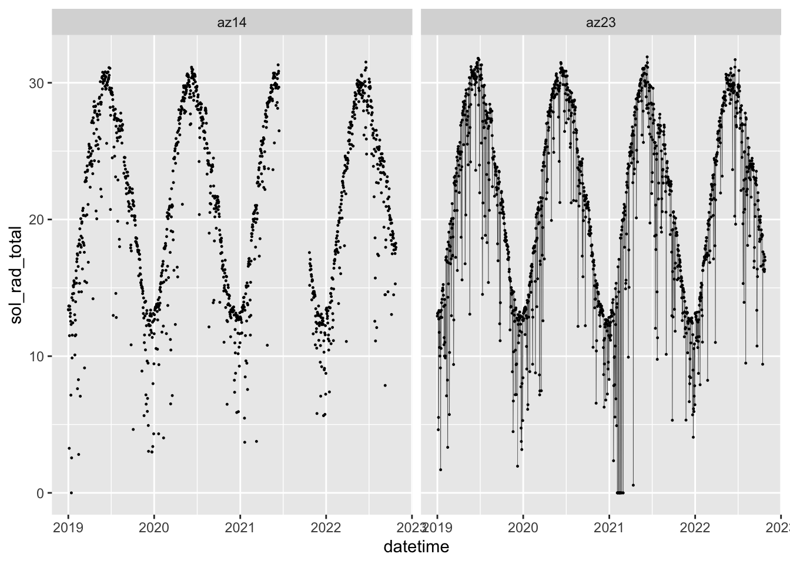
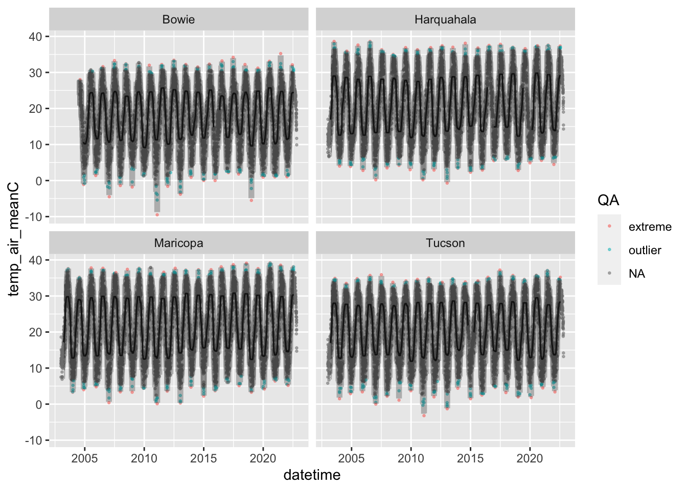
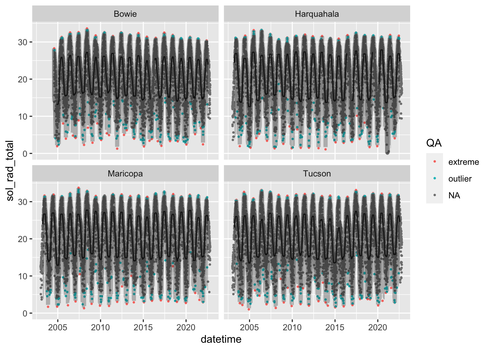
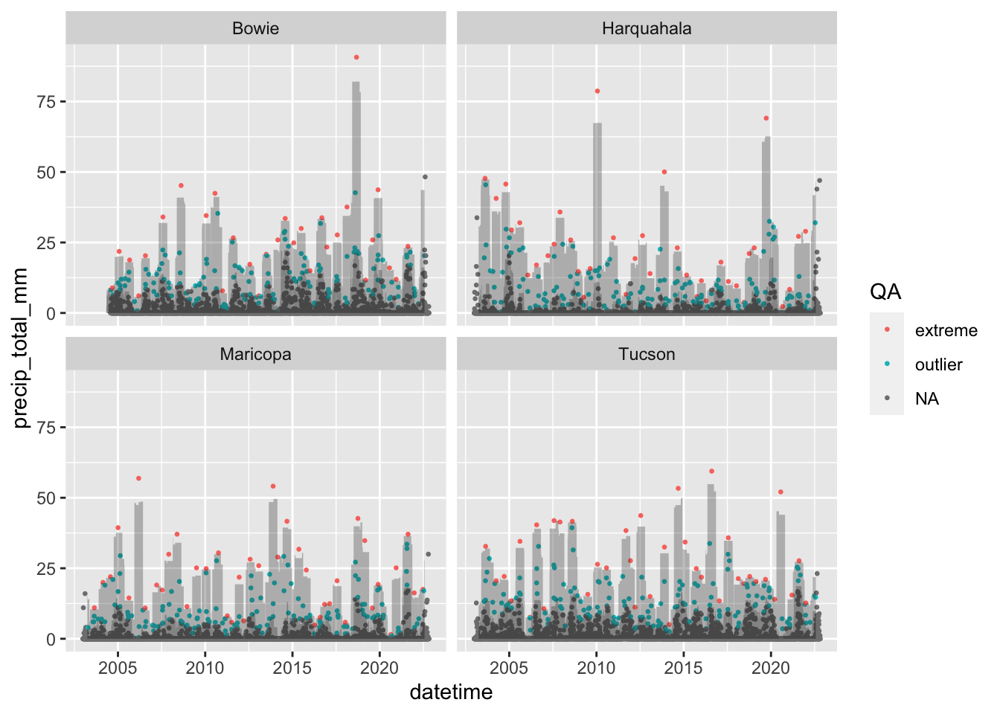

# remotes::install_github("cct-datascience/azmetr")
library(azmetr)
library(tsibble)
library(tidyverse)
library(lubridate)
library(slider)
library(here)azmet-qaqc
1 Problem Definition
We want to use forecasts to do quality assurance of AZMet weather data. Use the existing timeseries available from the API (and possibly also historical data not on the API) to forecast the current day’s (or hour’s) data with prediction interval(s). Data that falls outside of those prediction interval(s) will get flagged as extreme values and possibly interpolated. Variables that need QA include:
- precipitation
- air temperature
- soil temperature
- solar radiation
- wind speed
- humidity
Other variables are (probably?) derived
2 Gathering Information
2.1 Retrieve Data
Download all the daily data available from the API.
#read in historic data
daily_hist <- read_csv(here("data", "daily_hist.csv"))Rows: 177749 Columns: 30
── Column specification ────────────────────────────────────────────────────────
Delimiter: ","
chr (2): meta_station_id, meta_station_name
dbl (27): date_year, date_doy, temp_air_maxC, temp_air_minC, temp_air_meanC...
date (1): datetime
ℹ Use `spec()` to retrieve the full column specification for this data.
ℹ Specify the column types or set `show_col_types = FALSE` to quiet this message.#get data from end of historic data until 2022-10-19
if(!file.exists(here("data", "daily-2022-10-19.rds"))) {
daily <- az_daily(start_date = max(daily_hist$datetime) + 1,
end_date = "2022-10-19")
#save these data
write_rds(daily, here("data", "daily-2022-10-19.rds"))
}
# Read in already existing data, extract last date, retrieve data since that date
daily_old <- read_rds(here("data", "daily-2022-10-19.rds"))
lastdate <- max(daily_old$datetime)
daily_new <- az_daily(start_date = lastdate + 1)
daily <- bind_rows(daily_old, daily_new)
#join to historic data
daily <- bind_rows(daily_hist, daily) Find and resolve duplicates
duplicates(daily, key = c(meta_station_id, meta_station_name), index = datetime)# A tibble: 170 × 69
date_year date_doy datetime temp_…¹ temp_…² temp_…³ relat…⁴ relat…⁵ relat…⁶
<dbl> <dbl> <date> <dbl> <dbl> <dbl> <dbl> <dbl> <dbl>
1 2006 365 2006-12-31 17.8 -1.9 6 100 25.8 74.1
2 2006 365 2006-12-31 17.8 -1.9 6 100 25.8 74.1
3 2006 365 2006-12-31 19.8 1.7 9.6 69.9 21.4 48.1
4 2006 365 2006-12-31 19.8 1.7 9.6 69.9 21.4 48.1
5 2006 365 2006-12-31 20.3 0.9 9.3 78.7 18 50.8
6 2006 365 2006-12-31 20.3 0.9 9.3 78.7 18 50.8
7 2006 365 2006-12-31 15.1 -5.7 3.7 90.8 26.1 59.7
8 2006 365 2006-12-31 15.1 -5.7 3.7 90.8 26.1 59.7
9 2018 220 2018-08-08 36.7 24 29 66.1 24.5 46.7
10 2018 220 2018-08-08 36.7 24 29 66.1 24.5 46.7
# … with 160 more rows, 60 more variables: vp_deficit_mean <dbl>,
# sol_rad_total <dbl>, precip_total_mm <dbl>, temp_soil_10cm_maxC <dbl>,
# temp_soil_10cm_minC <dbl>, temp_soil_10cm_meanC <dbl>,
# temp_soil_50cm_maxC <dbl>, temp_soil_50cm_minC <dbl>,
# temp_soil_50cm_meanC <dbl>, wind_spd_mean_mps <dbl>,
# wind_vector_magnitude <dbl>, wind_vector_dir <dbl>,
# wind_vector_dir_stand_dev <dbl>, wind_spd_max_mps <dbl>, eto_azmet <dbl>, …daily <- daily |>
filter(!are_duplicated(
daily,
key = c(meta_station_id, meta_station_name),
index = datetime
))Convert to tsibble for exploration
daily_ts <- as_tsibble(daily, key = c(meta_station_id, meta_station_name), index = datetime)Any rows marked as needing review?
daily_ts |> filter(meta_needs_review != 0)# A tsibble: 131 x 69 [1D]
# Key: meta_station_id, meta_station_name [29]
date_year date_doy datetime temp_…¹ temp_…² temp_…³ relat…⁴ relat…⁵ relat…⁶
<dbl> <dbl> <date> <dbl> <dbl> <dbl> <dbl> <dbl> <dbl>
1 2022 94 2022-04-04 27.2 10.5 20.0 61.6 15.8 34.0
2 2022 95 2022-04-05 31.0 10.2 21.7 61.3 13.0 31.1
3 2022 96 2022-04-06 31.2 11.3 22.7 57.2 9.5 25.5
4 2022 97 2022-04-07 33.4 7.70 20.9 47.7 3.32 17.4
5 2022 98 2022-04-08 34.3 6.79 21.4 45.2 2.55 17.2
6 2022 99 2022-04-09 33.6 9.42 23.8 36.6 3.76 12.7
7 2022 100 2022-04-10 30.9 16.2 24.0 36.0 9 20.1
8 2022 101 2022-04-11 29.9 17.6 23.5 40.8 12.7 26.7
9 2022 174 2022-06-23 42.3 25.6 31.6 47.6 13.9 32.6
10 2022 67 2022-03-08 21.3 5.96 13.7 55.5 8.71 23.4
# … with 121 more rows, 60 more variables: vp_deficit_mean <dbl>,
# sol_rad_total <dbl>, precip_total_mm <dbl>, temp_soil_10cm_maxC <dbl>,
# temp_soil_10cm_minC <dbl>, temp_soil_10cm_meanC <dbl>,
# temp_soil_50cm_maxC <dbl>, temp_soil_50cm_minC <dbl>,
# temp_soil_50cm_meanC <dbl>, wind_spd_mean_mps <dbl>,
# wind_vector_magnitude <dbl>, wind_vector_dir <dbl>,
# wind_vector_dir_stand_dev <dbl>, wind_spd_max_mps <dbl>, eto_azmet <dbl>, …Check extreme values:
daily_ts |> filter(temp_air_meanC > 200)# A tsibble: 67 x 69 [1D]
# Key: meta_station_id, meta_station_name [13]
date_year date_doy datetime temp_…¹ temp_…² temp_…³ relat…⁴ relat…⁵ relat…⁶
<dbl> <dbl> <date> <dbl> <dbl> <dbl> <dbl> <dbl> <dbl>
1 2015 14 2015-01-14 999 999 999 999 999 999
2 2015 15 2015-01-15 19.4 999 999 999 999 999
3 2017 204 2017-07-23 999 999 999 999 999 999
4 2017 205 2017-07-24 999 999 999 999 999 999
5 2017 206 2017-07-25 999 999 999 999 999 999
6 2017 207 2017-07-26 999 999 999 999 999 999
7 2017 208 2017-07-27 999 999 999 999 999 999
8 2016 357 2016-12-22 999 999 999 999 999 999
9 2016 358 2016-12-23 999 999 999 999 999 999
10 2016 359 2016-12-24 999 999 999 999 999 999
# … with 57 more rows, 60 more variables: vp_deficit_mean <dbl>,
# sol_rad_total <dbl>, precip_total_mm <dbl>, temp_soil_10cm_maxC <dbl>,
# temp_soil_10cm_minC <dbl>, temp_soil_10cm_meanC <dbl>,
# temp_soil_50cm_maxC <dbl>, temp_soil_50cm_minC <dbl>,
# temp_soil_50cm_meanC <dbl>, wind_spd_mean_mps <dbl>,
# wind_vector_magnitude <dbl>, wind_vector_dir <dbl>,
# wind_vector_dir_stand_dev <dbl>, wind_spd_max_mps <dbl>, eto_azmet <dbl>, …Looks like historic data uses 999 for NA probably. I’ll set those to NA
daily_ts <- daily_ts |>
mutate(across(where(is.numeric), \(x) if_else(x == 999, NA_real_, x)))Any gaps in the data?
daily_ts |> scan_gaps()# A tsibble: 268 x 3 [1D]
# Key: meta_station_id, meta_station_name [13]
meta_station_id meta_station_name datetime
<chr> <chr> <date>
1 az04 Safford 2009-01-17
2 az08 Parker 2017-03-05
3 az08 Parker 2017-03-06
4 az08 Parker 2017-03-07
5 az08 Parker 2017-03-08
6 az08 Parker 2017-03-09
7 az08 Parker 2017-03-10
8 az08 Parker 2017-03-11
9 az08 Parker 2019-02-26
10 az08 Parker 2019-02-27
# … with 258 more rowsyes, let’s make them explicit NAs
daily_ts <- fill_gaps(daily_ts, .full = TRUE)Check that gaps were made explicit:
Code
daily_ts |>
filter(meta_station_id %in% c("az23", "az14"))|>
filter(year(datetime) > 2018) |>
ggplot(aes(x = datetime, y = sol_rad_total)) +
geom_line(na.rm = TRUE, size = 0.1) +
geom_point(na.rm = TRUE, size = 0.2) +
facet_wrap(~meta_station_id)
3 Sliding windows
I’ll explore the sliding window quantile approach used in (Faybishenko et al. 2021). I’ll use slider because it’s tidyverse-friendly and I want to learn it. I’ll use a rolling, centered, 6-month window to calculate upper and lower 95% and 99% quantiles. Anything outside of the rolling 99% quantile is an “extreme” value, which Faybishenko et al. (2021) assumed was bad data, and anything between the 95% and 99% quantile is an “outlier” which is suspect, but not necessarily bad.
In the plots below, I only show a few stations for clarity.
3.1 Mean Air Temp
Code
temp_roll_test <-
daily_ts |>
select(temp_air_meanC) |>
group_by_key() |>
mutate(
rolling_median = slide_dbl(
temp_air_meanC,
median,
.before = 90,
.after = 90,
.complete = TRUE
)
) |>
mutate(upper95 = slide_dbl(
temp_air_meanC,
\(x) quantile(x, c(0.975), na.rm = TRUE),
.before = 90,
.after = 90,
.complete = TRUE
)) |>
mutate(lower95 = slide_dbl(
temp_air_meanC,
\(x) quantile(x, c(0.025), na.rm = TRUE),
.before = 90,
.after = 90,
.complete = TRUE
)) |>
mutate(upper99 = slide_dbl(
temp_air_meanC,
\(x) quantile(x, c(0.999), na.rm = TRUE),
.before = 90,
.after = 90,
.complete = TRUE
)) |>
mutate(lower99 = slide_dbl(
temp_air_meanC,
\(x) quantile(x, c(0.001), na.rm = TRUE),
.before = 90,
.after = 90,
.complete = TRUE
)) |>
mutate(QA = case_when(
temp_air_meanC > lower99 & temp_air_meanC < lower95 ~ "outlier",
temp_air_meanC > upper95 & temp_air_meanC < upper99 ~ "outlier",
temp_air_meanC < lower99 ~ "extreme",
temp_air_meanC > upper99 ~ "extreme",
is.na(temp_air_meanC) ~ NA_character_
)) Code
temp_roll_test |>
filter(meta_station_name %in% c("Bowie", "Harquahala", "Tucson", "Maricopa")) |>
ggplot(aes(x = datetime)) +
geom_point(aes(y = temp_air_meanC, color = QA), size = 0.5, alpha = 0.5) +
geom_line(aes(y = rolling_median)) +
geom_ribbon(aes(ymin = lower95, ymax = upper95), alpha = 0.3) +
geom_ribbon(aes(ymin = lower99, ymax = upper99), alpha = 0.3) +
facet_wrap(~meta_station_name)Warning: Removed 604 rows containing missing values (geom_point).Warning: Removed 787 row(s) containing missing values (geom_path).
3.2 Solar radiation
Code
sol_roll_test <-
daily_ts |>
group_by_key() |>
select(sol_rad_total) |>
mutate(
sol_rolling_median = slide_dbl(
sol_rad_total,
median,
.before = 90,
.after = 90,
.complete = TRUE
)
) |>
mutate(sol_upper95 = slide_dbl(
sol_rad_total,
\(x) quantile(x, c(0.975), na.rm = TRUE),
.before = 90,
.after = 90,
.complete = TRUE
)) |>
mutate(sol_lower95 = slide_dbl(
sol_rad_total,
\(x) quantile(x, c(0.025), na.rm = TRUE),
.before = 90,
.after = 90,
.complete = TRUE
)) |>
mutate(sol_upper99 = slide_dbl(
sol_rad_total,
\(x) quantile(x, c(0.999), na.rm = TRUE),
.before = 90,
.after = 90,
.complete = TRUE
)) |>
mutate(sol_lower99 = slide_dbl(
sol_rad_total,
\(x) quantile(x, c(0.001), na.rm = TRUE),
.before = 90,
.after = 90,
.complete = TRUE
)) |>
mutate(QA = case_when(
sol_rad_total > sol_lower99 & sol_rad_total < sol_lower95 ~ "outlier",
sol_rad_total > sol_upper95 & sol_rad_total < sol_upper99 ~ "outlier",
sol_rad_total < sol_lower99 ~ "extreme",
sol_rad_total > sol_upper99 ~ "extreme",
is.na(sol_rad_total) ~ NA_character_
)) Adding missing grouping variables: `meta_station_id`, `meta_station_name`Code
sol_roll_test |>
filter(meta_station_name %in% c("Bowie", "Harquahala", "Tucson", "Maricopa")) |>
ggplot(aes(x = datetime)) +
geom_point(aes(y = sol_rad_total, color = QA), size = 0.5) +
geom_line(aes(y = sol_rolling_median)) +
geom_ribbon(aes(ymin = sol_lower95, ymax = sol_upper95), alpha = 0.3) +
geom_ribbon(aes(ymin = sol_lower99, ymax = sol_upper99), alpha = 0.3) +
facet_wrap(~meta_station_name)Warning: Removed 602 rows containing missing values (geom_point).Warning: Removed 787 row(s) containing missing values (geom_path).
3.3 Precipitation
Code
precip_roll_test <-
daily_ts |>
select(precip_total_mm) |>
group_by_key() |>
mutate(
precip_rolling_median = slide_dbl(
precip_total_mm,
median,
.before = 90,
.after = 90,
.complete = TRUE
)
) |>
mutate(precip_upper95 = slide_dbl(
precip_total_mm,
\(x) quantile(x, c(0.975), na.rm = TRUE),
.before = 90,
.after = 90,
.complete = TRUE
)) |>
mutate(precip_lower95 = slide_dbl(
precip_total_mm,
\(x) quantile(x, c(0.025), na.rm = TRUE),
.before = 90,
.after = 90,
.complete = TRUE
)) |>
mutate(precip_upper99 = slide_dbl(
precip_total_mm,
\(x) quantile(x, c(0.999), na.rm = TRUE),
.before = 90,
.after = 90,
.complete = TRUE
)) |>
mutate(precip_lower99 = slide_dbl(
precip_total_mm,
\(x) quantile(x, c(0.001), na.rm = TRUE),
.before = 90,
.after = 90,
.complete = TRUE
)) |>
mutate(QA = case_when(
precip_total_mm > precip_lower99 & precip_total_mm < precip_lower95 ~ "outlier",
precip_total_mm > precip_upper95 & precip_total_mm < precip_upper99 ~ "outlier",
precip_total_mm < precip_lower99 ~ "extreme",
precip_total_mm > precip_upper99 ~ "extreme",
is.na(precip_total_mm) ~ NA_character_
)) Code
precip_roll_test |>
filter(meta_station_name %in% c("Bowie", "Harquahala", "Tucson", "Maricopa")) |>
ggplot(aes(x = datetime)) +
geom_point(aes(y = precip_total_mm, color = QA), size = 0.5) +
# geom_line(aes(y = precip_rolling_median)) +
geom_ribbon(aes(ymin = precip_lower95, ymax = precip_upper95), alpha = 0.3) +
geom_ribbon(aes(ymin = precip_lower99, ymax = precip_upper99), alpha = 0.3) +
facet_wrap(~meta_station_name)Warning: Removed 602 rows containing missing values (geom_point).
Seems a little overzealous with precip. Likely because an emprical distribution is not really appropriate for precip data.
References
Faybishenko, Boris, Roelof Versteeg, Gilberto Pastorello, Dipankar Dwivedi, Charuleka Varadharajan, and Deb Agarwal. 2021. Quality Assurance and Quality Control (QA/QC) of Meteorological Time Series Data for Billy Barr, East River, Colorado USA. Environmental System Science Data Infrastructure for a Virtual Ecosystem. https://doi.org/10.15485/1823516.